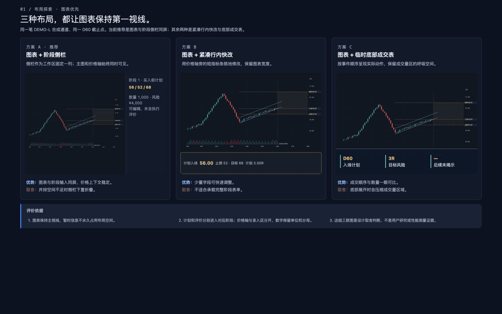
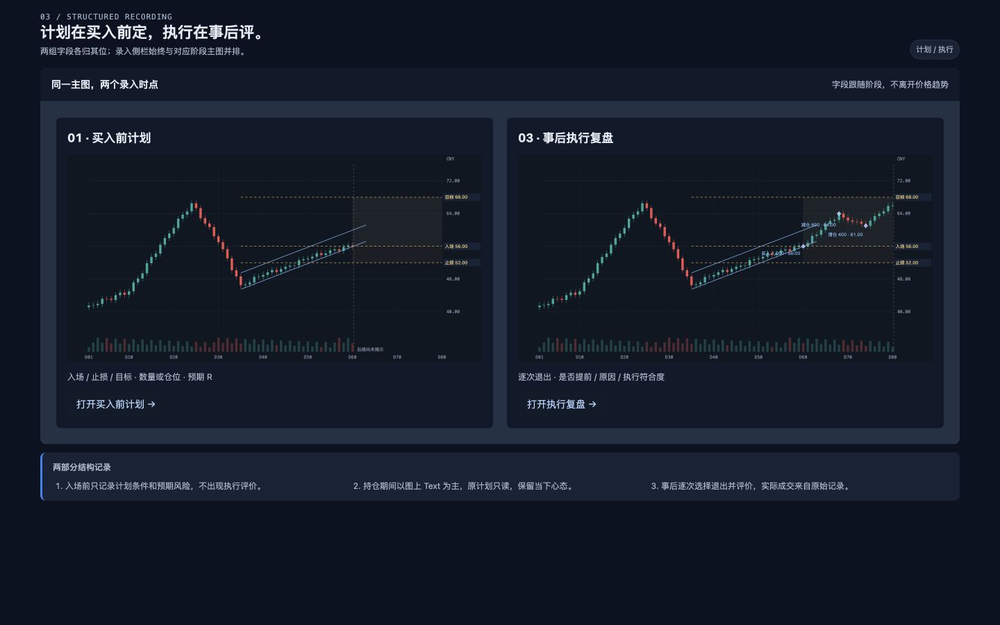
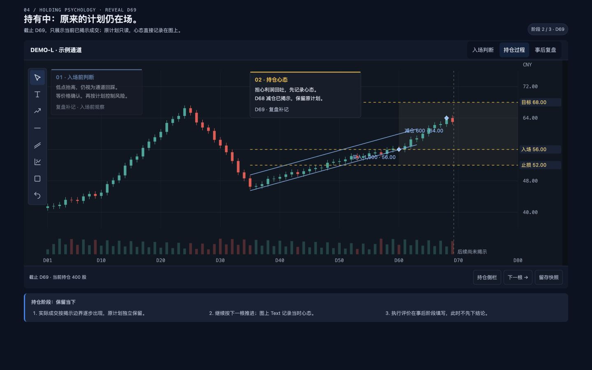
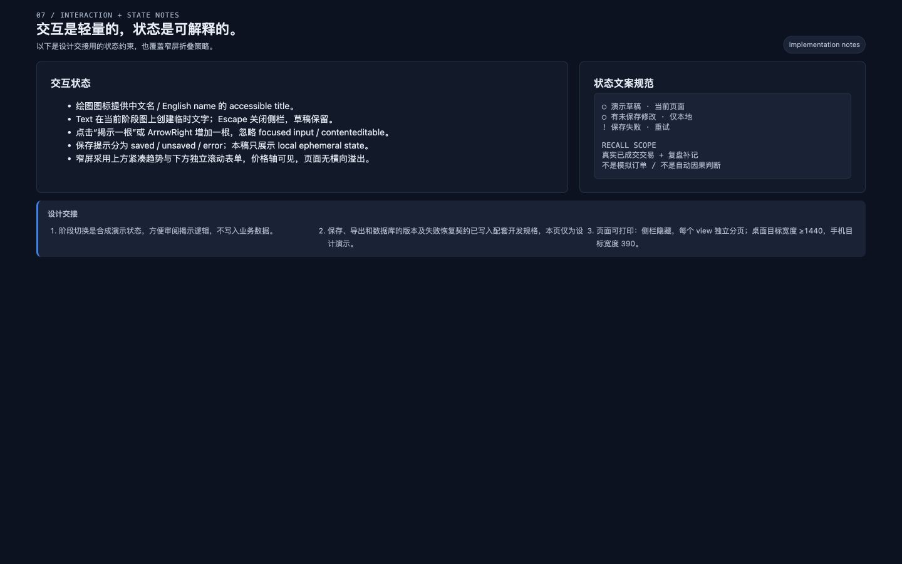
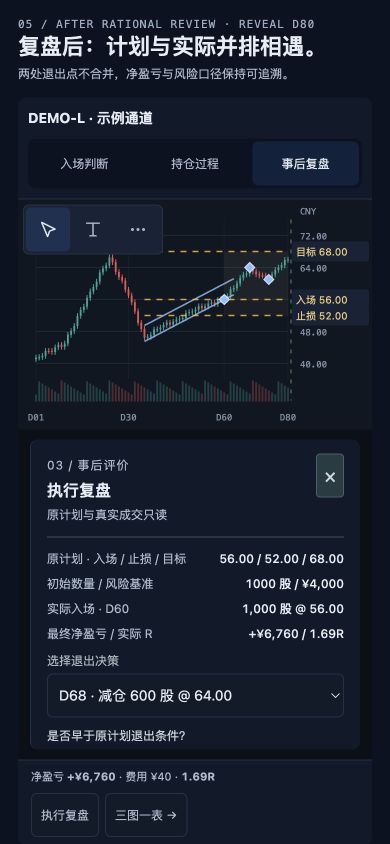

CHART-FIRST REVIEW / DEVELOPMENT BASIS
让计划、过程与复盘
留在同一张主图上。
已确认：买入前计划与事后执行评价分开录入。右侧栏参与布局，价格轴始终留在图表内；持仓阶段优先使用图上 Text。
最终方案 A44 条用户故事22 类元素七张最终画板
打开完整视觉 demo ↗边看趋势边录入；切换三个阶段验证操作阅读最终需求规格交互、字段、保存、指标与导出契约查看视觉与元素规范沿用现有深蓝灰 / 蓝色交互 / 用户图表设置启动与开发交接离线使用、任务、源码、版本与校验方式

本包用于后续开发。demo 只保存当前页面状态；数据库写入、完整绘图、真实 PPTX 导出和手机软件键盘验收仍待实施。
最终画板











实施时的权威顺序
需求规格定义行为与数据；元素规范定义风格与尺寸；demo 和图片提供视觉示例。B/C 为历史探索，背景资料不替代本期定稿。开发任务保留在 ready-for-agent，尚未启动产品实施。